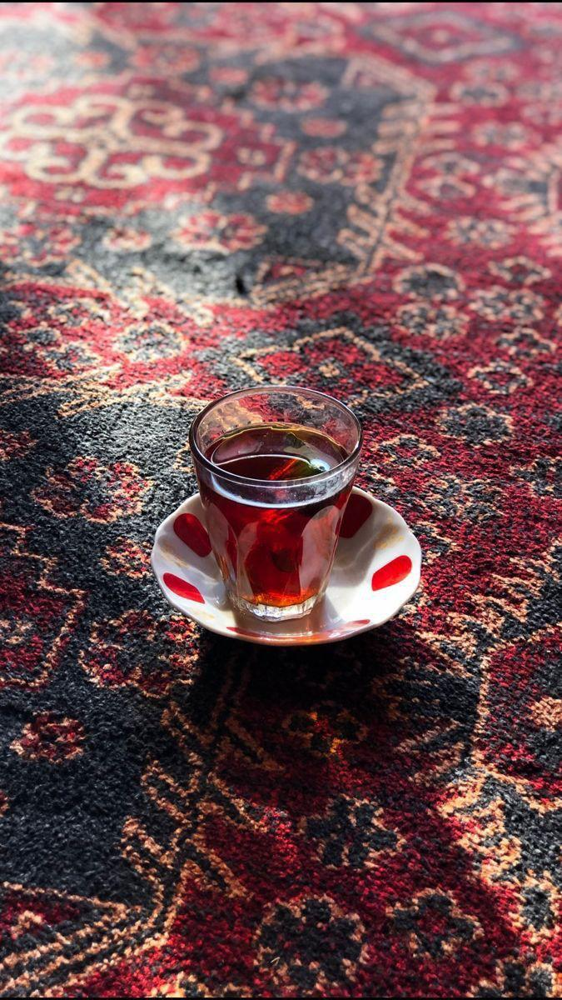

عالجمر
مطعم خليجي · مشاوي وعيش
جمرٌ مكشوفٌ في الصالة، وعيشٌ على أصوله.
كلُّ أنواع الأرزّ الخليجي، ولحمٌ لا يعرف غير الجمر.
بروفايل المشروع · قطر · نسخة ثانية
المدخل02
لماذا يَطبخ هذا الساحلُ على الجمر
في أرضٍ قليلةِ الشجر، لم تكن النارُ شيئاً يُسرَف فيه. فما يُحرَق مرّةً
كان لا بدَّ أن يُطعِم مرّتين — ومن هنا تعلّم هذا الساحلُ أن يَنتظِر
النارَ حتى تَسكُن.
واللهبُ عجول: يَحرِق السطحَ، ويترك القلبَ نيّئاً، ويُعطي سخاماً لا
طعماً. أمّا الجمرُ فهو النارُ بعد أن هَدَأت — حرارةٌ صافيةٌ ثابتةٌ
تُنضِج من الداخل، وتُعطي العيشَ قاعاً ذهبياً لا يُصنَع على موقد.
وبين اللهبِ والرمادِ ساعةٌ واحدة.
تلك الساعةُ هي كلُّ المطبخ.
والجمرُ في الخليجِ ليس تحت اللحمِ وحده: الدلّةُ تَقعُد على جمرِها حتى
تَستويَ القهوة، والعودُ يُوضَع على جمرةٍ ليُستقبَلَ الضيف. فالجمرةُ
الواحدةُ تَطبخ وتُضيف وتُعطِّر — ولهذا هي هنا أقربُ إلى الكرمِ من الطهي.
ثمّ تأتي السفرة: صينيّةٌ واحدةٌ في وسطِ المجلس، وعيشٌ مُفلفَلٌ تحت
اللحم، ويدٌ تُقسِّم. فالخليجيُّ يأكل جَمْعاً، والصينيّةُ الواحدةُ هي
الدعوةُ نفسُها.
ومن هذه الساعةِ أخذنا الاسم. عالجمر
الجمر
الجمرُ تحتَه، لا اللهبُ فوقه
شوّاءٌ واقفٌ على الجمرِ طولَ الخدمة، وسريرُ فحمٍ يُجدَّد، ومسافةٌ
مقيسةٌ لكلِّ قطعة — فالريشُ ليس كالتكّة، والروبيانُ ليس كالحمور.
مَن خلف المشروع04
ليس مشروعاً أوّل
صاحبُ عالجمر مشغّلٌ قائمٌ في الدوحة، يُدير مطعمَين عاملَين
اليوم. وهذا الفرقُ بين فكرةٍ على ورقٍ ومشروعٍ يَعرِف صاحبُه المطبخَ
والموظّفَ والموسمَ والمورّد.
مطعم قائمقيمر وكاهي
مطعمٌ عاملٌ في الدوحة. (يُؤكَّد
الاسمُ وتُضاف بياناتُه قبل تقديمِ الملفِّ لأيِّ جهة.)
مطعم قائمشاي بوحمد
مطعمٌ عاملٌ في الدوحة. (يُؤكَّد
الاسمُ وتُضاف بياناتُه قبل تقديمِ الملفِّ لأيِّ جهة.)
لماذا هذه أهمُّ صفحةٍ في الملفّ
الجهةُ التي يُقدَّم لها هذا البروفايل — مالكُ عقارٍ أو مُشغّلُ
مجمّعٍ أو مموّل — تَسأل سؤالاً واحداً قبل كلِّ شيء: هل يَعرِف هذا
الرجلُ ما يفعل؟ ومشغّلٌ له مطعمان يُجيب ذلك قبل أن يُقال.
ما يُختصَرفريقٌ مُدرَّب
طاقمُ خدمةٍ ومطبخٍ قائمٌ يُمكن نقلُ خبرتِه لا بناؤها من الصفر.
ما يُختصَرموردون معروفون
سلاسلُ لحمٍ وأرزٍّ وفحمٍ مُجرَّبةٌ لا مُجازَفٌ بها.
ما يُختصَرمصوّرون محترفون
أصولٌ بصريّةٌ تُنتَج داخلياً لا تُشترى جاهزة.
الأرقامُ التشغيليّةُ (المساحةُ والمقاعدُ ومتوسّطُ الفاتورةِ وتكلفةُ
التجهيز) لم تُعطَ بعد، وتُضاف في صفحةِ «ما يُستكمل».
المشاوي
ما يَستحقُّ الجمر
لحمٌ طازجٌ يُقطَّع في يومِه، وتوابلٌ قليلةٌ بقصد: ما كان طيّباً لا
يحتاج أن يُغطّى.
العيش08
كلُّ أنواع الأرزّ الخليجي
العيشُ عندنا ليس صحناً جانبياً. لكلِّ نوعٍ أرزُّه وبهارُه وطريقةُ
طبخِه وزمنُه — والخلطُ بينها هو ما يجعل أرزَّ المطاعم كلَّه بطعمٍ واحد.
مجبوس
الكويت · البحرين · قطر
لحمٌ يُسلَق ببهارِ المجبوس، والعيشُ في مرقِه حتى يَشرَبه. ومعه الدقّوس.
كبسة
نجد · الرياض
بهارُ الكبسةِ والطماطمِ والليمونِ الأسود، ولوزٌ وزبيبٌ محمَّر.
مضغوط
الكويت
اللحمُ والعيشُ في قِدرِ الضغطِ معاً، فيَخرُج العيشُ مُشرَباً.
مظبي
الجنوب · عسير
اللحمُ على حجرٍ مُحمَّى فوق الجمر، مُغطّى حتى يَنضج ببخارِه.
مندي
حضرموت · الحجاز
في حفرةٍ مُغلقةٍ ببخارٍ محبوس، فلا يَلمَس اللحمُ ناراً ولا ماءً.
رز بخاري
الحجاز · مكّة
جزرٌ وزبيبٌ وبهارٌ خفيف، ولونٌ ذهبيٌّ من الزعفران.
معمّر
الحجاز
عيشٌ بالتمرِ والسكرِ والسمنِ مع اللحم. حلوٌ ومالحٌ بلا تنافر.
صيادية
السواحل · الخليج
عيشُ السمك: بصلٌ مُحمَّرٌ حتى يَسوَدّ، ومرقُ الحمور، وسمكٌ فوقه.
عيش وكباب
الطلبُ الأوّل
عيشٌ أبيضُ مُفلفَلٌ وكبابٌ من الجمر، ودقّوسٌ ولبنٌ بالنعنع.
الصحنُ الذي سُمّي به المطعم.
المائدة10
من القائمة
مُختارٌ أوّليٌّ من القائمةِ الأولى. ولم تُكتَب أسعارٌ لأنّها لم
تُقرَّر — ورقمٌ يُكتَب قبل أن يُقرَّر يُلزِم المطعمَ بما لم يَختَره.
التجربة12
خمسُ نجومٍ تُقاس في التفاصيل

الضيافةُ تبدأ قبل الطلب — لا بعد الحساب
النجمةُ الخامسةُ ليست في ثمنِ الصحن. هي في أن تُستقبَل قبل أن
تَطلُب، وأن يَصِل الخبزُ ساخناً، وأن يُعرَف صحنُك إن عُدت.
أوّلاًالقهوةُ قبل القائمة
دلّةٌ وتمرٌ أوّلَ ما تَجلِس — ضيافةٌ لا تُحتسَب على الحساب.
ثانياًالمجلس
جلساتٌ أرضيّةٌ بمساندَ لمن أرادها، وطاولاتٌ لمن أرادها.
ثالثاًالمجمرُ على عينك
لا مطبخٌ مُغلق. والشفافيّةُ أصدقُ من أيِّ وعد.
رابعاًصينيّةُ الجَمْع
صينيّةٌ واحدةٌ في الوسطِ ويدٌ تُقسِّم، لا أطباقٌ منفصلة.
الهويّة البصريّة13
اللوحةُ والخطّ
خمسةُ ألوانٍ لا أكثر، وكلُّ درجةٍ أخرى مُشتقّةٌ منها حسابياً.
ويَحرُسها فحصٌ آليٌّ يُسقِط أيَّ لونٍ دخيل.
الزمرّدي — Emerald Green
#154230
النبيذي — Deep Burgundy
#5D1E21
الذهبي العتيق — Antique Gold
#A6824A
الكريمي — Soft Cream
#E6E2DA
الأسودُ خارجَ الاستعمال
بقرارِك: لا يُستعمل الأسودُ ولا الفحميّ في هذا الملفِّ ولا
في أسطحِه. فالأسطحُ زمرّديّةٌ ونبيذيّةٌ وكريميّة، والذهبيُّ للخطوطِ
والعناوين. وحتى حُجُبُ الصورِ زمرّديّةٌ ونبيذيّةٌ لا سوداء.
الخطّ والشعاررقعةُ عارف
الشعارُ هو الاسمُ مكتوباً بخطِّ رقعةِ عارف — لا رمزٌ ولا
علامةٌ مرسومة. والنصُّ بخطِّ أميري.
الأرقامبالرسمِ الغربي
كلُّ رقمٍ 0123456789، ويُمنَع الخطُّ من
استبدالِها تلقائياً. ويَحرُس ذلك فحصٌ آليّ.
الموقع الإلكتروني14
جاهزٌ ويعمل
موقعُ المطعمِ مبنيٌّ بالكاملِ قبل الافتتاح: صفحةٌ عربيّةٌ واحدةٌ من
اثني عشر قسماً، تَحمِل القصّةَ والمفهومَ والقائمةَ والهويّة.
| القسم | ما فيه |
|---|
| الواجهة | الاسمُ بخطِّ الرقعةِ على جمرٍ متوهّج |
| المدخل | قصّةُ الجمرِ والخليج |
| الجمر | المجمرُ المكشوفُ وطريقةُ الطهي |
| العيش | تسعةُ أنواعٍ من الأرزِّ الخليجيِّ بمنشأِ كلٍّ منها |
| الكباب | ستّةٌ من المشاوي |
| المائدة | مُختارٌ من القائمةِ في أربعةِ أعمدة |
| المجلس | أربعةُ أعمدةٍ لتجربةِ الخمسِ نجوم |
| التواصل | حقولُ الافتتاحِ، معلَنةَ النقصِ لا مُلفَّقة |
مبنيٌّ على الصدقِ لا على الوعد
كلُّ حقلٍ لم يُحسَم مكتوبٌ في الموقعِ أنّه لم يُحسَم —
المدينةُ والعنوانُ وتاريخُ الافتتاحِ والأسعار. وحقلٌ يوهِم باليقينِ
وهو فارغٌ أسوأُ من حقلٍ يقول إنّه فارغ.
عربيٌّ أصلاً
مبنيٌّ من اليمينِ إلى اليسار، لا مُترجَماً.
خطٌّ مستضافٌ محلياً
لا يعتمد على خادمٍ خارجيٍّ قد يُحجَب.
فحوصٌ آليّة
تمنع لوناً دخيلاً أو رابطاً مكسوراً أو قصّاً في الطباعة.
ما يُستكمل15
حقولٌ لم تُحسَم بعد
هذه النسخةُ تَذكُر ما لم يُقرَّر على أنّه لم يُقرَّر. وتُستكمَل
قبل تقديمِ الملفِّ لأيِّ جهةٍ خارجيّة.
الدولةقطر ✓
المدينةُ والحيُّ والعنوانلم تُعطَ
تاريخُ الافتتاحلم يُحدَّد
المساحةُ وعددُ المقاعدلم تُعطَ
متوسّطُ الفاتورةِ وتكلفةُ التجهيزلم تُعطَ
اسما المطعمَين القائمَينيُؤكَّدان — قُرئا «قيمر وكاهي» و«شاي بوحمد»
القائمةُ النهائيّةُ والأسعارقيدُ الإعداد
الشيفُ والطاقملم يُعطَ
الهاتفُ وحساباتُ التواصللم تُفتَح
النطاقُ الإلكترونيلم يُسجَّل
أيقونةُ التبويبتنتظر اختياراً من ثلاثة
الأولويّةُ الأولى: الأصولُ من المصوّر
صورُ هذا الملفِّ قَصّاتُ ويب لا أصولُ كاميرا. تُطلَب الأصولُ من
المصوّرِ على Google Drive أو واتساب بوضع «مستند» لا
«صورة» — فوضعُ «صورة» هو الذي يُنتج 736 بكسلاً ويُفقد نصفَ التفاصيل.
ومعها سطرٌ منه بتسليمِ الحقّ. وعندها تُطبَع الصورُ في حجمِ
صفحةٍ كاملةٍ بلا أن تَخشَن.
حالةُ الصورِ في هذا الملفّ16
إحدى عشرةَ صورةً، وحالةُ كلٍّ منها
تُقال الحالةُ بلا تجميلٍ، لأنّ الملفَّ قد يُقدَّم لمالكِ عقارٍ أو
مموّل — وصورةٌ لا تُملَك تُقرأ مخاطرةً عليه هو.
| الصور | الحالة |
|---|
الجمرُ والشبكة
coals-grate · embers |
الأقربُ لأن تكون لك. داكنةٌ حبيبيّةٌ بإضاءةِ الجمرِ
وحده، بلا نصٍّ ولا علامة — بصمةُ لقطةِ هاتفٍ في مكانٍ معتم.
وإحداها رفعتَها باسمِ المطعمِ نفسِه. |
الصالاتُ الأربع
hall-arch · hall-rugs · hall-lamps · hall-warm |
الأرجحُ أنّها صالاتُ مطعميك. أفدتَ بذلك، وهي تطابق
لوحتَك: سجّادٌ نبيذيٌّ وجدارٌ كريميٌّ وضوءٌ ذهبيٌّ منخفض.
ويُؤكَّد أيُّ صورةٍ لأيِّ مطعم قبل أن تُوسَم باسم. |
المجمرُ واللحم
grill-hand · grill-flame · kebab-skewers · kebab |
تصويرٌ احترافيٌّ بلا شكّ ولا علامةَ مائيّةَ فيه. لكنّ أبعادَها
قَصّاتُ ويب لا أصولُ كاميرا — فلا يصحُّ النشرُ قبل أن يَصِل
الأصلُ من المصوّرِ ومعه سطرُ تسليمِ الحقّ. |
الشاي
tea |
نسبتُها 675×1200 = 9:16 بالضبط — نسبةُ
شاشةِ هاتفٍ لا كاميرا. والأرجحُ أنّها من أحدِ مطعميك،
ولم تُوسَم باسمٍ بالظنّ. |
ما استُبعد — ولماذا
من دفعتَي الصورِ أُخرِجت عدّةٌ: واحدةٌ تحمل علامةً مائيّةً
ظاهرةً لمصدرِ مخزون في تسعةِ مواضع، ولوحةٌ زيتيّةٌ لفنّانٍ آخر،
وصورةُ كتالوجِ سجّادٍ على خلفيّةٍ بيضاء، وقوالبُ تصميمٍ جاهزة، ومصغَّرةٌ
بـ474 بكسلاً لا تَصلُح للطباعة.
والتفصيلُ بالأدلّةِ في docs/RIGHTS-NOTICE.md
وRIGHTS-NOTICE-2.md.
وصورةٌ واحدةٌ فيها علامةٌ باهتةٌ تُشبه توقيعاً عربياً
(tea2) — لم تُستعمَل حتى تُؤكّد أنّها
لك أو لمصوّرِك.
 المجمرُ مكشوفٌ في الصالة — ثلاثُ حواسَّ تعمل قبل أن يُوضَع الطلب
المجمرُ مكشوفٌ في الصالة — ثلاثُ حواسَّ تعمل قبل أن يُوضَع الطلب